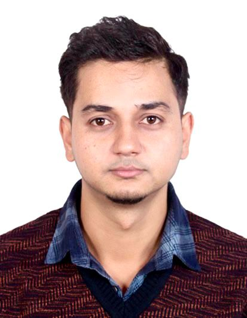

Sustainable Materials
Exploring alternative and bio-based materials for more sustainable construction.
STRUCTURAL ENGINEER · RESEARCHER
I am Sudip Ghimire, a structural engineer and researcher working across structural design, construction, earthquake-resistant engineering, and sustainable materials.

01 — ABOUT
I am a Structural Engineer and Researcher with professional experience in structural design, construction supervision, quality control, project coordination and infrastructure delivery. My work combines practical field experience with research-oriented problem solving.
My research interests include sustainable construction materials, biofiber-reinforced mortar and concrete, structural engineering, earthquake-resistant design, materials engineering and finite element analysis.
I am particularly interested in developing practical engineering solutions that improve structural performance while reducing environmental impact and making better use of locally available materials.
02 — RESEARCH
Exploring alternative and bio-based materials for more sustainable construction.
Investigating natural fibers as reinforcement and their effects on mortar and concrete performance.
Structural analysis, design and performance of reinforced concrete and building structures.
Earthquake-resistant construction, structural resilience and practical engineering solutions.
Numerical modelling and analysis using engineering simulation tools.
Connecting design intent with safe, practical and quality-controlled construction.
03 — PUBLICATIONS
Co-authored research on landslide susceptibility and national highway vulnerability in the Nepal Himalaya.
View on ResearchGate ↗Experimental research investigating a plant-based fiber for mortar reinforcement and concrete rebar applications.
View on ResearchGate ↗Research investigating Argeli fiber as a sustainable material for mortar and concrete applications.
Under review04 — EXPERIENCE
Tvashta Ribhu Pvt. Ltd. · Lalitpur, Nepal
Plan, design and analyze residential and commercial structures in compliance with relevant codes and standards, while providing technical solutions during design and construction.
Sagarmatha Engineering College · Lalitpur, Nepal
Delivered civil engineering lectures, supervised practical student projects and provided technical mentorship.
Griha Prabesh Design Studio Pvt. Ltd. · Lalitpur, Nepal
Worked on structural design and analysis, construction operations, technical coordination, mentoring and project planning using AutoCAD, SketchUp, ETABS and MS Project.
Central Level Project Implementation Unit (Building), Government of Nepal · Kathmandu
Managed residential construction projects, quality inspections, earthquake-resistant construction training, site evaluation, contractor coordination and QA/QC.
Bhubaneshwori & Bhaibhab Builders Pvt. Ltd. · Kathmandu, Nepal
Supported design and execution of highway and building projects, feasibility studies, cost estimation and multidisciplinary coordination.
05 — EDUCATION
Pokhara University · Pokhara, Nepal
Kurukshetra University · Kurukshetra, India
Omega Higher Secondary School · Lalitpur, Nepal
06 — TOOLKIT
07 — CONTACT
For professional, academic or research-related communication, feel free to reach out by email or through my professional profiles.